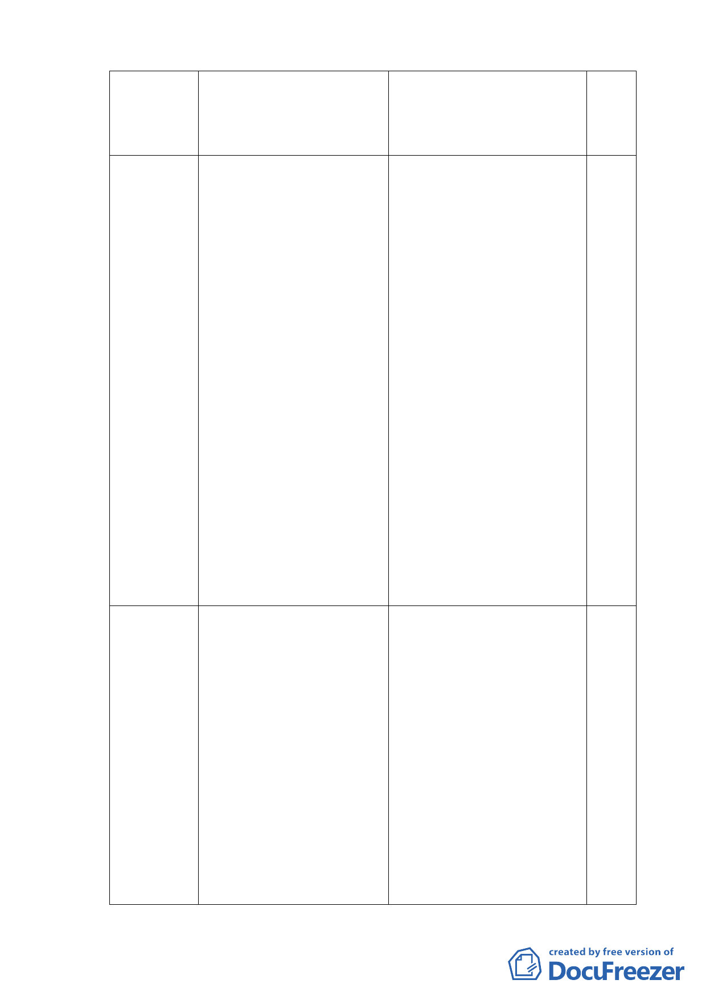

94.2.16
函請市府都市發展局儘速函 都市發展局 94.2.25 函覆：副
送辦理情形或補充資料到會 請本市都市更新處研提更新計
憑辦
畫，協助民政局提會報告。
94.6.17
函請市府民政局、都市發展 民政局 94.6.24 函覆：「依本府
局，儘速將協調結果彙送本 94.5.9 北大同文化園區計畫
會憑辦。
專案推動小組第五次會議決議
『孔廟東側住宅區設計管制方
案採方案二（不超過 4 層樓，
高度 14 公尺以下）；惟有關建
築物顏色、材質、植栽綠化與
屋頂等型式須與孔廟相融合，
擬訂都市準則後，先送請本小
組委員（專家學者）提供意見，
後續請民政局以方案二併同原
變更都市計畫案，召開地區說
明會及住戶意願調查』。是以本
案副請本市都市更新處於擬訂
都市準則完竣，儘速將本案說
明會資料函送本局據以辦理後
續相關協調事項」。
95.11.21
函請市府民政局、都市發展 一、民政局 95.11.27 函覆略
局、都市更新處，儘速將協
以：「住戶對於該區建築管
調結果彙送本會憑辦。
制及更新方案尚未完全與
本市都市更新處達成共
識，刻正由該處持續研商
協調辦理中」；
二、都市發展局亦於 95.12.6
函民政局略以「惟查
95.11.8 文化局召開之文
化資產審議委員會中擬保
留孔廟圍牆之歷史價值不
-4-